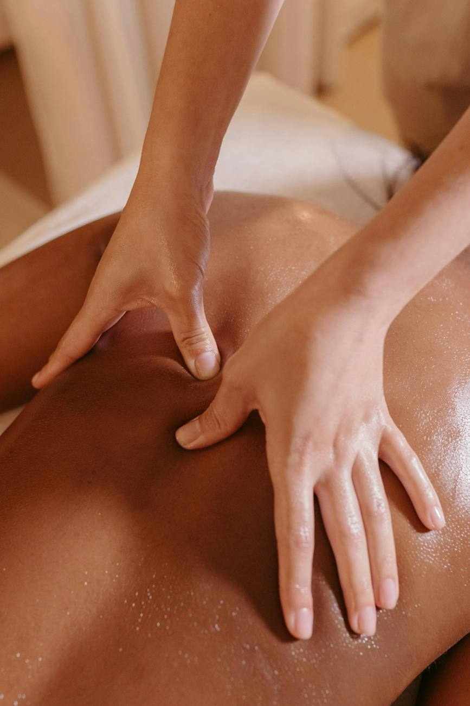

Nous trouver
Un moment pour vous.
Heures d'ouverture
1535, chemin Sainte-Foy, bureau 100
Québec, QC G1S 2N7
Mal de dos, sciatique, tensions au cou : nos massothérapeutes d'expérience adaptent chaque massage à votre douleur, et vous aident rapidement.

Touchez une zone. On vous dit quel massage vous ferait le plus de bien.
Pour dénouer les tensions et soulager les douleurs musculaires.
Pression ferme pour les noeuds tenaces et les douleurs chroniques.
Avant ou après l'effort, pour récupérer et prévenir les blessures.
Positionnement adapté et confortable, pour le dos et les jambes.
Mouvements enveloppants pour relâcher le stress et mieux dormir.
Étirements et pressions pour retrouver souplesse et énergie.
« J'ai eu des soins de massothérapie avec Floriane et je suis plus que satisfaite. »
Service professionnel, attentionné et efficace.Avis Google
C'est très bien et les prix sont très abordables.Avis Google
1535, chemin Sainte-Foy, bureau 100
Québec, QC G1S 2N7